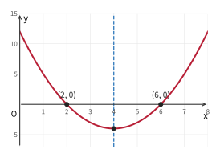
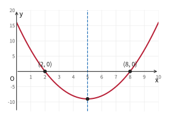
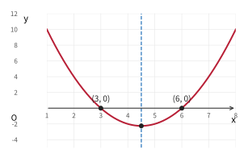

別冊練習問題 6 の解答 2つの解の比が与えられたとき
(1) 2次方程式 \(x^2-8x+k=0\) の2つの解の比が \(3:1\) であるとき、定数 \(k\) の値を求めよ。
解を文字でおく
解の比が \(3:1\) なので、解を \(\alpha=3\beta\)、\(\beta\) とおく。
2つの解は \(x\) 軸との交点。比が \(3:1\) になる位置を図で確かめる。

解と係数の関係
\(\alpha+\beta=8\)、\(\alpha\beta=k\)。
\[3\beta+\beta=8\ \Rightarrow\ \beta=2\]\(k\) を求める
\[\alpha=6,\ \ k=\alpha\beta=6\cdot2=12\]確認：解は \(6,\ 2\)（実数）。
【答案】
\[k=12\]答
(2) 2次方程式 \(x^2-10x+k=0\) の2つの解の比が \(4:1\) であるとき、定数 \(k\) の値を求めよ。
解を文字でおく
解の比が \(4:1\) なので、解を \(\alpha=4\beta\)、\(\beta\) とおく。
2つの解は \(x\) 軸との交点。比が \(4:1\) になる位置を図で確かめる。

解と係数の関係
\(\alpha+\beta=10\)、\(\alpha\beta=k\)。
\[4\beta+\beta=10\ \Rightarrow\ \beta=2\]\(k\) を求める
\[\alpha=8,\ \ k=\alpha\beta=8\cdot2=16\]確認：解は \(8,\ 2\)（実数）。
【答案】
\[k=16\]答
(3) 2次方程式 \(x^2-9x+k=0\) の2つの解の比が \(2:1\) であるとき、定数 \(k\) の値を求めよ。
解を文字でおく
解の比が \(2:1\) なので、解を \(\alpha=2\beta\)、\(\beta\) とおく。
2つの解は \(x\) 軸との交点。比が \(2:1\) になる位置を図で確かめる。

解と係数の関係
\(\alpha+\beta=9\)、\(\alpha\beta=k\)。
\[2\beta+\beta=9\ \Rightarrow\ \beta=3\]\(k\) を求める
\[\alpha=6,\ \ k=\alpha\beta=6\cdot3=18\]確認：解は \(6,\ 3\)（実数）。
【答案】
\[k=18\]答